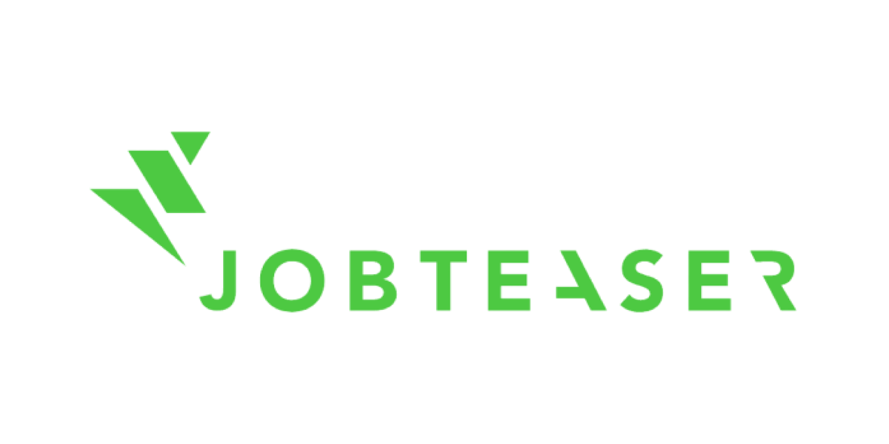
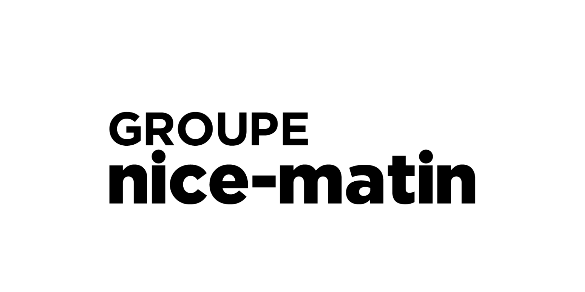
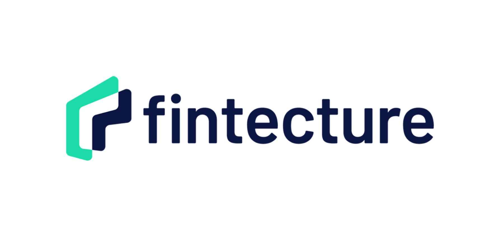
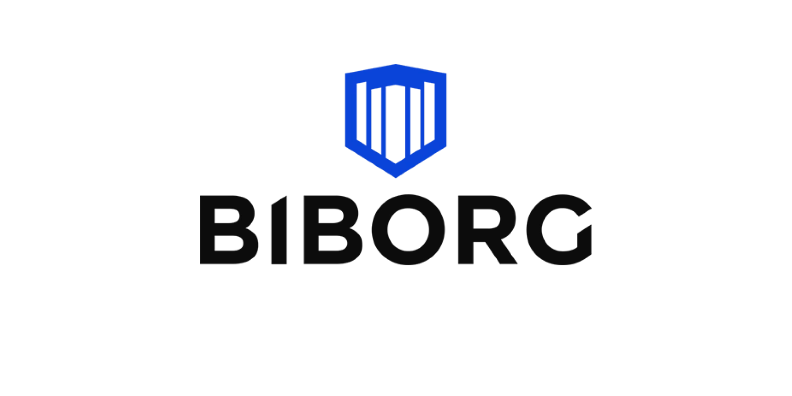
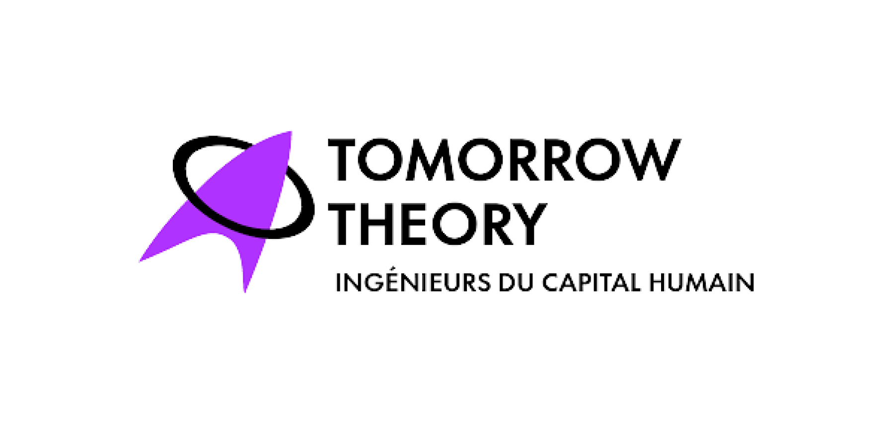

Prendre un poste de direction — les 100 premiers jours
Directrice des opérations, scale-up, 300 personnes
Lire le cas
Nos formations sont certifiées Qualiopi et finançables par votre OPCO En savoir plus
Des dirigeants sereins. Performants. Engagés.
Mieux qu’une formation, plus qu’un coaching : Scoaché accompagne dirigeants, équipes de direction et organisations avec une méthode unique, 100 % adaptative.

La Méthode Scoaché ©
Un objectif et des KPIs par talent. 100 % adaptative.
« Il y aura un avant et un après dans mes prises de parole. »
Lead Growth EngineerIls nous font confiance





Le coaching de dirigeant
Trois échelles pour franchir un cap — seul, en équipe de direction ou à l’échelle de toute l’entreprise. Choisissez ce qui vous ressemble.
Coaching individuel
Prise de poste, décision qui divise, relation bloquée, surcharge : on part de votre situation réelle, on fixe un objectif et des indicateurs, et on avance séance après séance.
Situations typiques

Coaching collectif
Un CODIR recomposé, un COMEX à aligner, une tension entre deux directions : on travaille sur la façon dont l’équipe fonctionne, pas seulement sur ce qu’elle produit.
Situations typiques

Coaching organisation
Réorganisation, croissance rapide, managers promus en interne : on conçoit des parcours qui mêlent coaching et formation pour toute une population de managers.
Situations typiques
Cas d’usage
Quinze situations réelles, racontées de près : contexte, objectif, dispositif, résultat.
Directrice des opérations, scale-up, 300 personnes
Lire le cas
CODIR de 8 personnes, ETI de services
Lire le cas
Entreprise de services, 40 managers intermédiaires
Lire le cas
La méthode en bref
Nous adaptons chaque parcours au profil, au besoin et au contexte de chacun — et de votre organisation.
01
Écouter
Analyse précise du besoin du talent et de l’entreprise, puis adaptation du contenu et du rythme au contexte et aux contraintes.
02
Mesurer
Des indicateurs formulés et auto-évalués par le talent, validés par le manager ou le HRBP : la progression devient objectivable.
03
Ajuster
Coaching pour l’objectif, apports théoriques et expérientiels ciblés pour les compétences. Le parcours s’ajuste en temps réel.
04
Ancrer
Une expérience visuelle et interactive, et des livrables coconstruits avec le talent qui restent après le parcours.
Formations
Quatre parcours individualisés de 4 à 10 h, finançables par votre OPCO.

01
Faire de la qualité relationnelle un levier de performance
Voir le programme

02
Désamorcer les tensions avant qu’elles ne deviennent des conflits
Voir le programme

03
Réussir ses prises de parole devant tous types d’audiences
Voir le programme

04
Gagner en aisance et en leadership grâce à une communication impactante
Voir le programme
Nos clients parlent de nous
Ilana Porteret accompagne nos équipes via du coaching sur des compétences liées à la communication et au leadership, avec d’excellents résultats et d’excellents retours de nos collaborateurs : une moyenne de satisfaction de 10/10.
 Carla MuranoHR Innovation Project Manager · ManoMano
Carla MuranoHR Innovation Project Manager · ManoManoL’action de coaching a conduit les collaborateurs à une réelle prise de conscience qui les a fait progresser et leur a permis d’être au rendez-vous des nouvelles missions confiées. Ilana a très bien compris le contexte et a rempli sa mission d’une main de maître.
 Sylvie MignonneResponsable du développement RH · Nice-Matin
Sylvie MignonneResponsable du développement RH · Nice-MatinPlus de 40 de nos talents ont été coachés sur des sujets soft skills, avec un excellent taux de satisfaction des équipes et des résultats qui se sont inscrits dans la durée.
 Jean-Claude CharletCEO · Schoolab
Jean-Claude CharletCEO · SchoolabDu top management aux équipes terrain, Ilana a été une coach impliquée, efficace et empathique. Très utile d’avoir ses lumières pendant la crise. Je la recommande.
 Wale Gbadamosi OyekanmiPrésident · Darewin
Wale Gbadamosi OyekanmiPrésident · DarewinLa qualité garantie

Certifié Qualiopi
La certification qualité a été délivrée au titre des actions de formation et des bilans de compétences. Nos formations sont finançables par votre OPCO.
Consulter le certificat (PDF)Un premier échange de 30 minutes, sans engagement, pour comprendre ce qui se joue et vous dire honnêtement si nous pouvons aider.